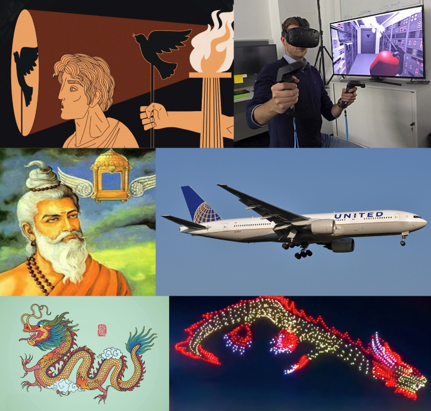

The other day I was watching a video of Elon Musk eating pineapple pizza with Joe Rogan and one moment got me thinking. Elon was talking about how his son asked him what Los Angeles was like ± 4000 years.
I pondered on this question for a while. Obviously the future will be wild beyond our imagination. But what will that future actually look like? My intuition said that if we’re still around, we will have built the tools that give us the abilities of the gods we worshiped from the prior 4000 years. I imagine a world with teleportation-like transportation, von-neumann probes and immortality.
"I wanna fight nature and win" - George Hotz
What does “abilities of the gods” mean? I think humans have a desire to transcend specific biological and physical limits. If you read through the supernatural ideas in religion, mythology, or lore, you'll notice similarities no matter the time period or civilization leading me to believe that some of these desires are innate.

The modern day entrepreneur is a priest, the engineer is a wizard and sci-fi media is the modernist version of the myths. The driving constant of technological progress is simply the aspiration to satisfy innate human desires. Let’s apply this to humanoid robots given my biased bullish views on humanoid robots.
If you read through the mythology of human automation, the use cases will range from fighting, cleaning or playing instruments. I interpret these diverse use-cases as a human desire to quite literally construct another human. Not an assembly worker or cleaner but a familiar embodied intelligence that can manipulate atoms like you and I. I specifically wanted to highlight a really interesting story from Lie Yukou, a Taoist philosopher who wrote about the idea of a humanoid robot in 350 BCE:
The next day Maestro Yan visited the King. Granting him an audience, the King asked, “Who is this accompanying you?” Maestro Yan replied, “It’s a performer I’ve created.” King Mu looked at it with astonishment. Its movements and gestures were those of a real human being. When the artisan pressed its cheek, it sang in tune; when he raised its hand, it danced in rhythm. It did all sorts of things, whatever one wished. The King thought it was a real human being, and watched it with his Queen and concubines. When the performance was over, the performer winked seductively at the concubines surrounding the King. The King was enraged; he wanted to execute Maestro Yan at once. Terrified, Maestro Yan immediately cut the performer into pieces to show the King it was made of a conglomeration of leather, wood, glue, lacquer, and colors. The King examined it carefully. Inside were liver and gall bladder, heart and lungs, spleen and kidneys, intestines and stomach. Outside were tendons and bones, limbs and joints, skin and down, teeth and hair. They were all artificial, but all there. Reassembled, it was restored to the way it was when he first saw it. As an experiment, the King removed the heart, whereupon the mouth could not speak. He removed the liver, whereupon the eyes could not see. He removed the kidneys, whereupon the legs could not walk. Now King Mu was pleased. He said admiringly, “Can human skill achieve the same effects as the Creator?” Calling for his second car, he had the thing loaded onto it to carry it back to China.
Anecdotally, there is something about a humanoid robot coming to life and moving that just captures everyone’s (not just the roboticists) attention. It seems to unlock a very pure and child-like curiosity. You have to see the robot moving in-person to feel it.
I think something that is under explored is the psychological interactions between humans and robots. Striking the right balance of form factor and industrial design. It’s funny how cars are 4 wheels on a chunk of metal but it needs to have a human-like face on the front and back. As roboticists iterate, we’ll converge on something that I imagine to be pretty fucking awesome.
It’s still early. While investors currently regard humanoid robots as flashy demos and toys, let’s recognize the idea of what is actually happening. Beyond financials and supply chains, we’re moving the needle towards another thing that humans have desired for thousands of years. Incentives like recessions or war will vary timing but my point is that since this is an innate human desire, it will not go away. It’s just a matter of time when it will happen.
"The dream of the internet will not burst - Jack Ma (1999)"